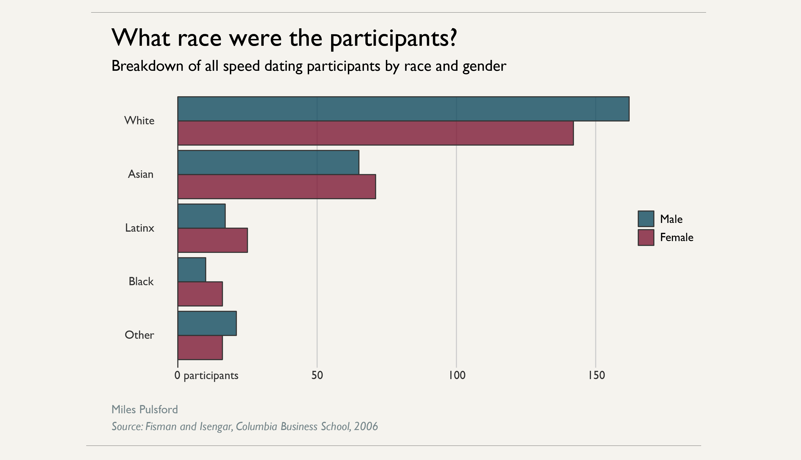
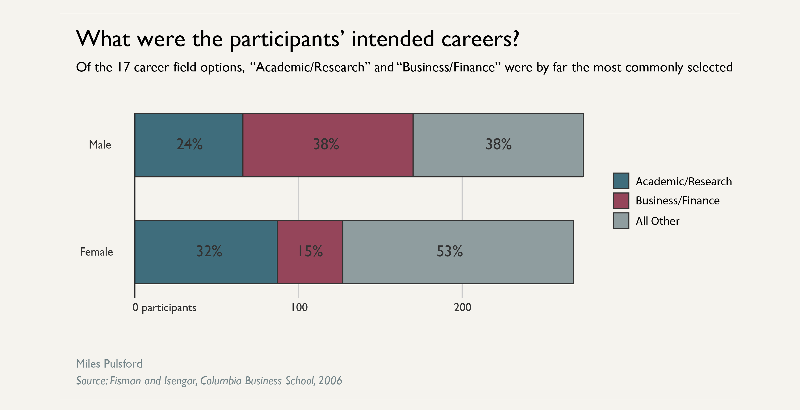
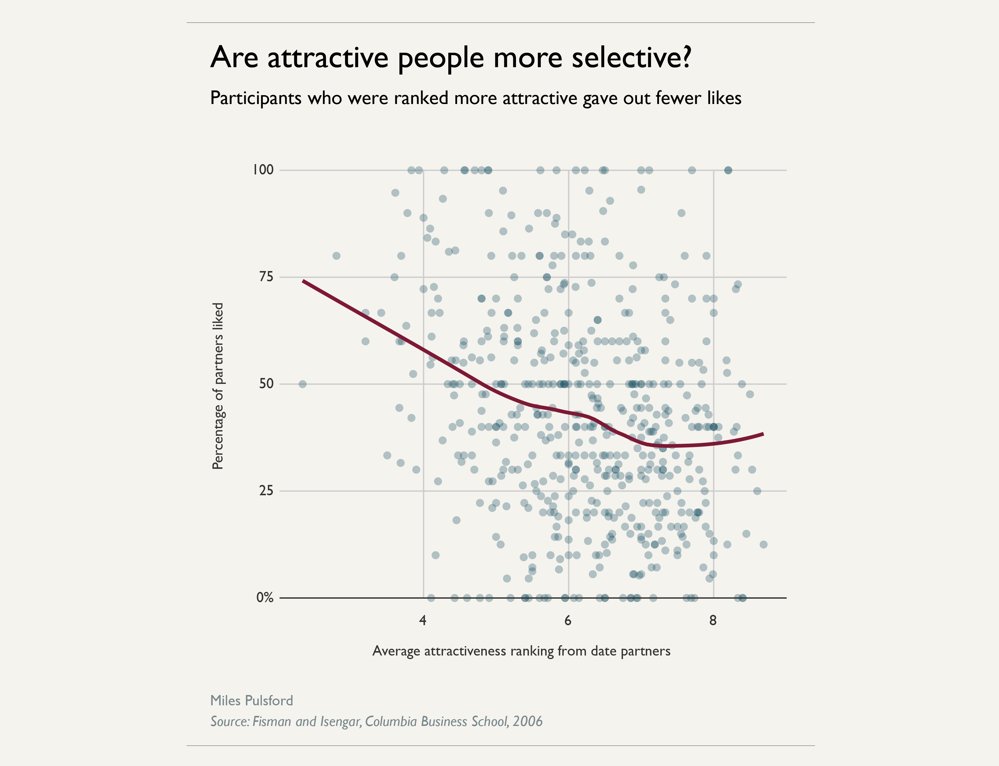

Age of participants:

Race of participants:
Career breakdown:
Turns out putting more effort into dating is correlated with success! Of course, it might be that people who find success in dating are more likely to keep doing it.

We are actually slightly LESS likely to be attracted to someone who is attracted to us!

Attractive people are more selective, but not dramatically so:
